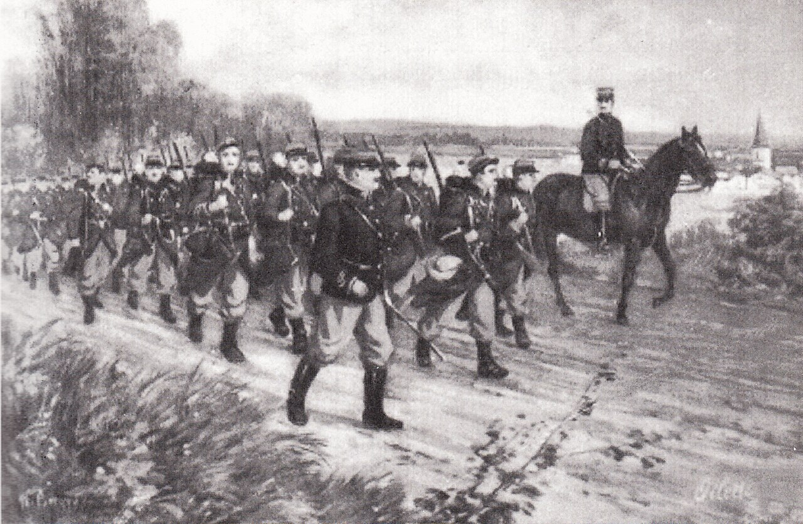
"The Miracle on the Marne" — the six days that stopped Germany and saved Paris.
France + Britain
The Allied Powers
Aim: halt the advance before Paris, then wheel and strike the exposed German flank.
Germany
The attacker
Aim: the Schlieffen Plan — sweep through Belgium, take Paris, beat France in six weeks before Russia was ready.
By early September the Germans had driven the Allies 250 km south in the "Great Retreat" and stood 40 km from Paris. The French government had fled to Bordeaux on September 2. Then von Kluck made his fateful turn.
Gallieni, military governor of Paris, saw Kluck's army cross his front and said: "They offer us their flank." He pushed Joffre to attack at once.
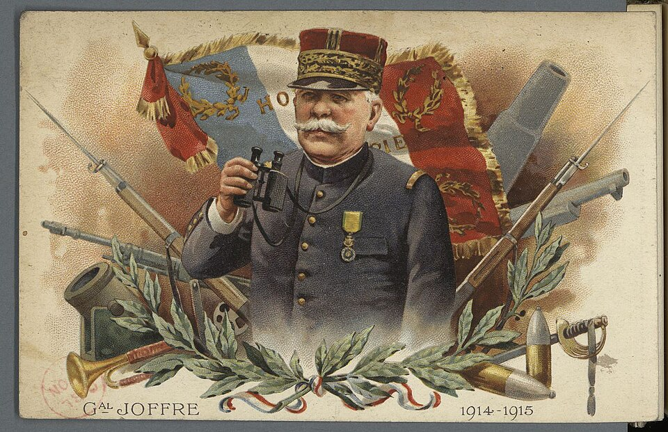
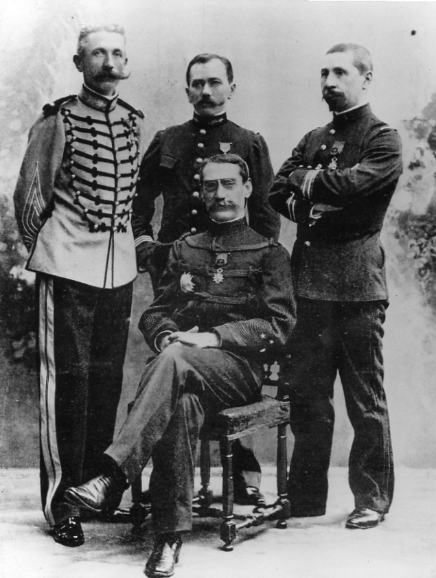
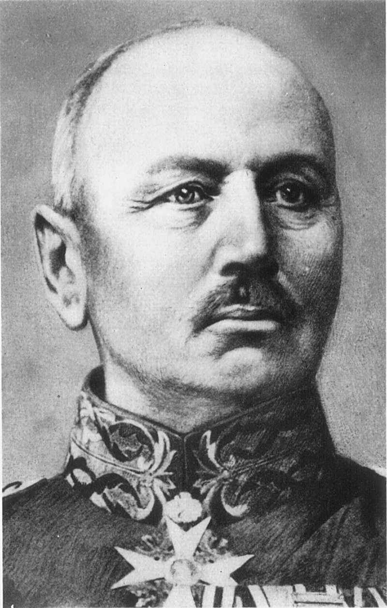
Moltke (chief of staff, 300 km away in Luxembourg), Kluck (1st Army), Bülow (2nd Army).
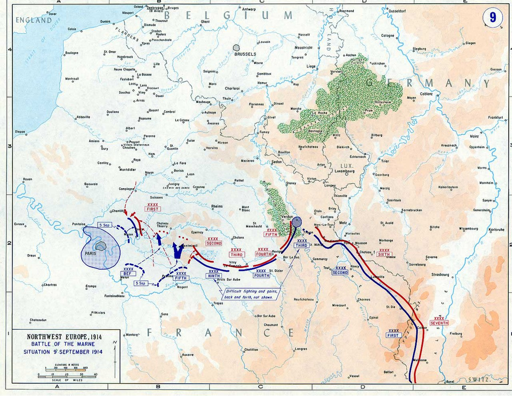
Kluck's 1st Army was the outer edge of a vast wheel meant to sweep west of Paris and encircle the French armies.
Instead Kluck turned southeast and crossed the Marne east of Paris on Sept 3 — bypassing the city instead of enveloping it.
The Germans had marched ~40 km a day for weeks. Men and horses were spent; supply lines were stretched thin.
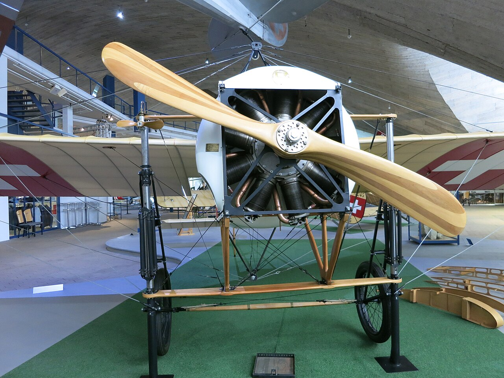
As Kluck wheeled to meet Maunoury's new 6th Army to his west, his 1st Army pulled away from Bülow's 2nd Army beside it.
British and French aircraft — one of the first decisive uses of air reconnaissance in history — spotted the widening gap.
The British Expeditionary Force and the French 5th Army (Franchet d'Espèrey) pushed straight into the opening, threatening both German armies with encirclement.
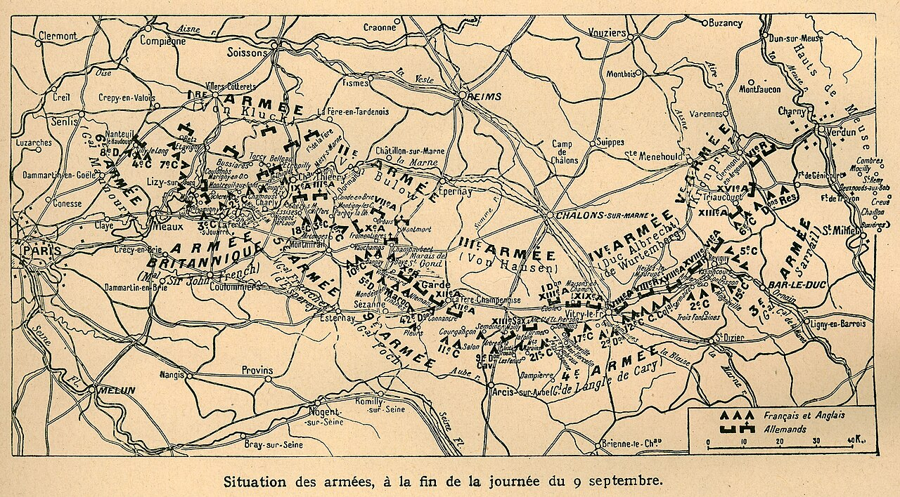
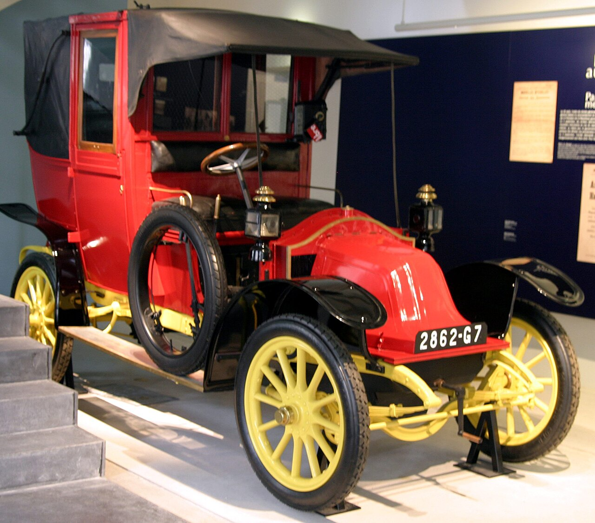
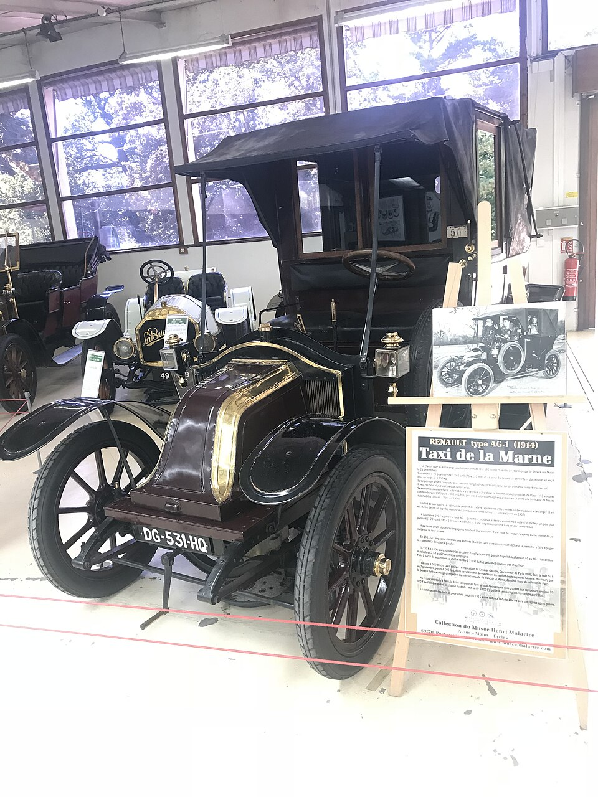
Renault AG-1 "Taxi de la Marne"
0
soldiers rushed ~50 km to Nanteuil-le-Haudouin.
The detail everyone remembers: the cabs kept their meters running, and the treasury paid the fares.
Maunoury's 6th Army hits the German right along the Ourcq; the general offensive opens.
The taxis reinforce the flank; the BEF and 5th Army press into the gap.
Fearing encirclement, Col. Hentsch authorizes a German retreat in Moltke's name.
Both sides halt at the Aisne and begin to dig in. Moltke tells the Kaiser: "Majesty, we have lost the war."
The French 75 mm field gun fired up to 15 rounds a minute. Artillery caused most of the war's casualties.
400–600 rounds a minute from a single gun cut down whole waves of attackers in the open.
Bolt-action rifles — French Lebel, German Mauser — armed every infantryman on the line.
Let Joffre shuttle whole armies across France to build the new 6th Army faster than Germans could march.
Scout planes gave the Allies their biggest edge — early aerial reconnaissance spotted the gap in the line.
The Paris taxis: the first battlefield troop lift by car, and the lasting symbol of the Marne.
0
Estimated casualties, all sides
Neither side could outflank the other, so both entrenched — the birth of the Western Front.
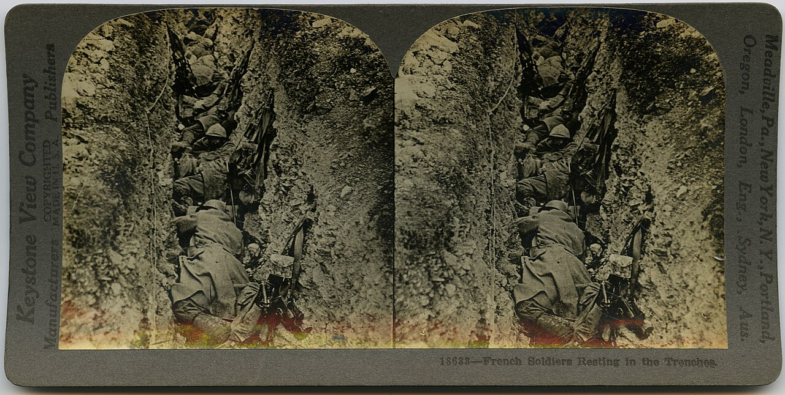
The German advance was halted 40 km from the capital and thrown back across the Marne. Paris never fell, and France stayed in the war.
There would be no six-week knockout. Germany was now trapped in the long two-front war against France and Russia it had dreaded.
The "Race to the Sea" and continuous trenches followed within weeks, freezing the Western Front in place for four years.
Moltke suffered a breakdown after the retreat and was quietly replaced by Erich von Falkenhayn on September 14, 1914.
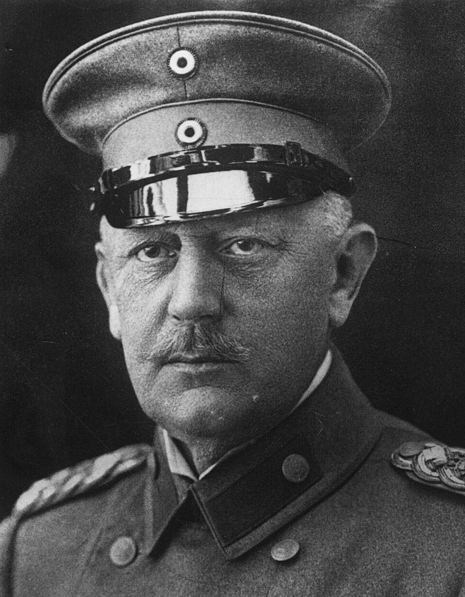
"Majesty, we have lost the war."
— Moltke to Kaiser Wilhelm II after the retreat.
The war Moltke feared dragged on until November 1918 and cost millions of lives at Verdun, the Somme, and beyond.
Sept 1914
Each army tried to outflank the other northward, stretching the front all the way to the English Channel.
Oct–Nov
The last mobile battles of 1914 ground to a halt. Open, moving warfare was finished for years.
1914–18
~700 km of trenches ran from the Channel to Switzerland, barely moving for four years.
Legacy
France called it le miracle de la Marne, one of history's most decisive battles.
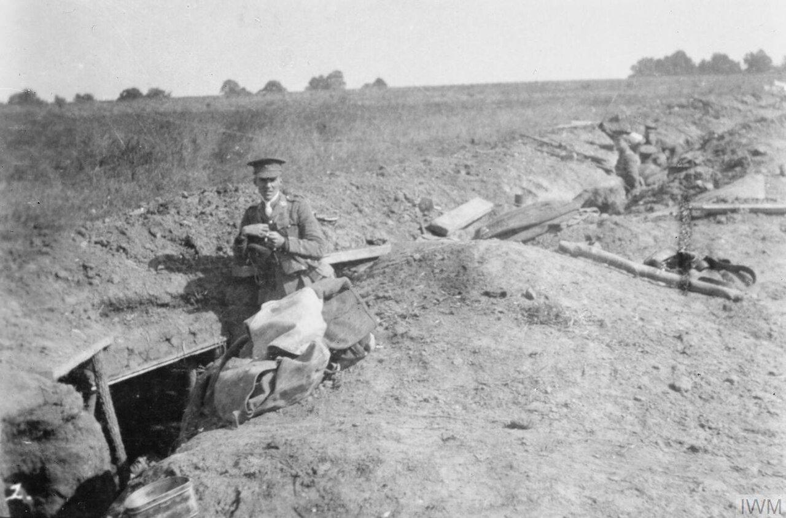
The deadlock led to Verdun and the Somme in 1916 — each costing hundreds of thousands of lives for a few kilometres of mud.
In July 1918, near the same river, the Allies won the Second Battle of the Marne — the turning point that finally ended the war.
Your result
0 / 6
01
When: Sept 5–12, 1914, on the Marne east of Paris.
02
Who: France (Joffre, Gallieni) + Britain vs. Germany (Moltke, Kluck, Bülow).
03
Turning point: a 50 km gap opened; aircraft spotted it; the Allies poured in.
04
Taxis: ~600 Paris cabs rushed ~6,000 troops to the flank.
05
Cost: ~500,000 casualties; Germans retreat 65 km to the Aisne.
06
Why it matters: saved Paris, ended the Schlieffen Plan, began trench warfare.
1 · Download the file
Save this whole presentation as a single index.html, then drop it (and your photo files) into your repository.
2 · Put it online for free (GitHub Pages)
github.com/new.index.html and all your .png photos into the repo root (same folder).https://yourname.github.io/your-repo/3 · Turn on free live sync (Firebase)
console.firebase.google.com and click Add project (free, no credit card). Name it, skip Google Analytics, Create.https://yourproject-default-rtdb.firebaseio.com).{ "rules": { ".read": true, ".write": true } } and click Publish.4 · Share the two links
Give the viewer link to your whole class and open the presenter link on your own laptop. When you change slides, every screen follows. Students can still hover and click to explore within your current slide.